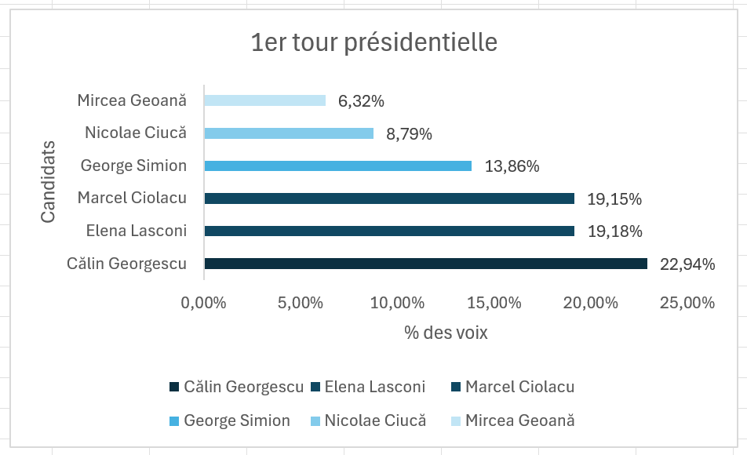

Introduction
La Roumanie occupe une position stratégique au sein de l'Union européenne et sur le flanc oriental de l'OTAN, ce qui rend chaque échéance électorale particulièrement observée. Dans ce contexte, la montée de Calin Georgescu dans le débat présidentiel a suscité une attention rapide, tant pour son positionnement politique que pour les dynamiques numériques qui ont accompagné sa visibilité.
L'affaire Georgescu illustre une question désormais centrale dans les démocraties contemporaines : jusqu'où les réseaux sociaux peuvent-ils orienter la perception publique, amplifier certains récits et influencer le résultat d'une campagne présidentielle ? L'enjeu dépasse la simple communication politique. Il touche à la qualité du débat démocratique, à la transparence des plateformes et à la capacité des institutions à détecter des formes de manipulation.
TikTok et la manipulation algorithmique
TikTok s'est imposé comme un espace de diffusion politique particulièrement puissant grâce à son système de recommandation, capable de propulser rapidement des contenus auprès d'audiences massives. Dans le cas roumain, plusieurs observateurs ont souligné le rôle possible d'une amplification inhabituelle de certaines vidéos, de slogans répétés et de formats émotionnels adaptés à une viralité maximale.
Ce type de circulation n'implique pas seulement une popularité organique. Il interroge aussi la manière dont l'algorithme peut privilégier des contenus polarisants, très engageants ou coordonnés, au détriment d'informations plus nuancées. Pour un électorat exposé à une campagne numérique intense, la frontière entre adhésion spontanée et influence structurée devient alors plus difficile à établir.
La Russie et l'ingérence étrangère
Section à venir.
Comparaison des sources
Section à venir.
Visualisation

Conclusion
L'affaire Georgescu montre que l'analyse d'une élection ne peut plus se limiter aux meetings, aux débats télévisés et aux sondages traditionnels. Les plateformes sociales, et en particulier TikTok, participent désormais à la fabrication de la visibilité politique et à la hiérarchisation des récits.
Pour les journalistes, les chercheurs et les institutions, le défi consiste à documenter avec précision ces mécanismes d'influence afin de distinguer la mobilisation légitime de la manipulation informationnelle. Dans le cas roumain, cette vigilance apparaît essentielle pour comprendre les évolutions du vote et les fragilités nouvelles de l'espace démocratique.